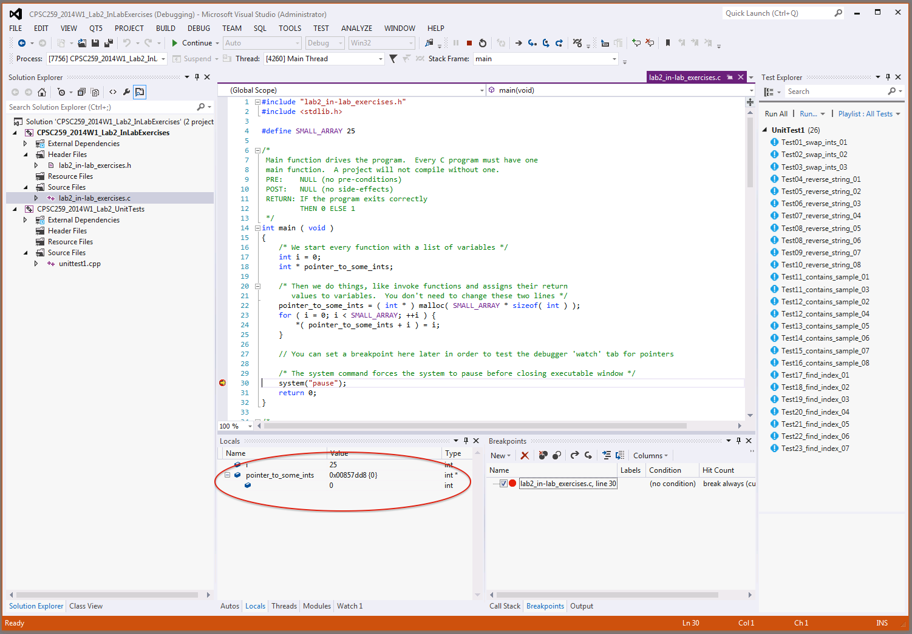

UBC CPSC 259 Lab 2 September 25 - September 29, 2017
1. Objectives for this lab
- Implement indirection and gain experience using pointers to dynamically manage memory
- Build competence with file input/output by continuing to parse structured data files
- Implement a simple string matching algorithm
- Add some helpful utility functions to your C programming repertoire by learning how to use some of the functions from string.h.
2. Pre-lab reading
The Pre-lab section of the lab summarizes the preparations you need to make prior to each lab, so you are ready to begin when you arrive at the start of your lab session. It is important to be prepared for the lab because you will be working in pairs.
You should always read the entire lab prior to your lab session, but often there are other things you will need to do in addition to just reading the description. Look for the TO-DO for the major tasks. |
Programming for different scientific domains
Welcome back to the CPSC 259 lab. We covered a lot in the first lab -- you reviewed some key concepts from APSC 160; you learned how to use fgets and sscanf to parse a file line by line; you learned how to use blackboxed code; you learned how to apply a Fourier analysis to a set of evenly spaced measurements to determine a tidal frequency. That's a lot. This lab is much shorter.
One of the things we would like you to think about this term is how data structures and algorithms are used when programming for different scientific domains. In this spirit, lab 2 explores bioinformatics. Bioinformatics integrates computer science, statistics, molecular biology, and biotechnology to increase the understanding of biological processes. Computing tools and computational thinking are applied to research efforts that include sequence alignment, genome assembly, protein structure alignment, and more. There is a good general overview of the field in the Wikipedia article about bioinformatics at http://en.wikipedia.org/wiki/Bioinformatics -- but don't read it unless you have time. Everything you need to know is below.
Bioinformatics
Bioinformatics is largely associated with projects like the Human Genome Project (1990-2003). The genome is the entirety of an organism's hereditary information (its complete set of genes). It is encoded in DNA (deoxyribonucleic acid) or, for many types of virus, in RNA (ribonucleic acid).
We're going to look at DNA in this lab, so let's introduce some of the terms we will use.
A DNA molecule or strand is a sequence of molecular units called bases or nucleotides (these are synonyms). There are four types, denoted A (adenine), C (cytosine), G (guanine), and T (thymine). Each strand of the familiar double-helix human DNA molecule contains about 3 billion of these nucleotides. There are two strands of DNA in the double helix, and each is a complementary copy of the other: an "A" on one strand is always paired with a "T" on the other, and a "C" is always paired with a "G". Sometimes we call these base pairs. Since reconstructing the base sequence of one strand is trivial if we have the sequence of the other, we really only need to study one strand to understand what a particular section of DNA does.
In our genetic code, three nucleotides (i.e., three "letters") of DNA form a codon and specify a single amino acid. There are 20 common types of amino acids. A protein molecule is nothing more than a long strand of amino acids. The amino acids determine the shape of the protein and, consequently, its function in the cell which makes it. DNA does not wear out quickly, compared with proteins. This makes DNA well suited for data storage in the cell. DNA is essentially a biological data structure.
A gene is a (usually long) sequence of codons and thus specifies a sequence of amino acids (a protein). Our genetic code is a fixed-length code: there are exactly three nucleotides in the code word (codon) for every amino acid. Why do you think the genetic code uses three DNA units per codon, rather than one or two units per codon? How many codons would there be if there were two units per codon? Why not four or more units per codon?
Each entry in the Table 2.1 below lists a codon — three capital letters representing DNA nucleotides — and an amino acid or the word "stop". For example, TCT speci?es the amino acid serine. The stop codons, TAA, TAG, and TGA, tell the cell's translational machinery that the end of a gene has been reached. Notice that more than one codon can specify the same amino acid, and thus more than one DNA sequence can specify the same protein. For example, the protein fragment methionine-isoleucine-phenelalanine-aspartic acid-glycine is coded by ATGATCTTTGACGGG and also by ATGATTTTTGATGGT.
Table 2.1 The genetic code.
| TTT phenylalanine |
TCT serine |
TAT tyrosine |
TGT cysteine |
| TTC phenylalanine |
TCC serine |
TAC tyrosine |
TGC cysteine |
| TTA leucine |
TCA serine |
TAA stop |
TGA stop |
| TTG leucine |
TCG serine |
TAG stop |
TGG tryptophan |
| CTT leucine |
CCT proline |
CAT histidine |
CGT arginine |
| CTC leucine |
CCC proline |
CAC histidine |
CGC arginine |
| CTA leucine |
CCA proline |
CAA glutamine |
CGA arginine |
| CTG leucine |
CCG proline |
CAG glutamine |
CGG arginine |
| ATT isoleucine |
ACT threonine |
AAT asparagine |
AGT serine |
| ATC isoleucine |
ACC threonine |
AAC asparagine |
AGC serine |
| ATA isoleucine |
ACA threonine |
AAA lysine |
AGA arginine |
| ATG methionine |
ACG threonine |
AAG lysine |
AGG arginine |
| GTT valine |
GCT alanine |
GAT aspartic acid |
GGT glycine |
| GTC valine |
GCC alanine |
GAC aspartic acid |
GGC glycine |
| GTA valine |
GCA alanine |
GAA glutamic acid |
GGA glycine |
| GTG valine |
GCG alanine |
GAG glutamic acid |
GGG glycine |
Now suppose we have a portion of DNA and we wish to find out which proteins it encodes. Since we don't know whether or not we have the beginning of the DNA sequence, and since we very likely have a piece from somewhere in the middle, we don't know where to start reading. Which base pair is the first base pair? Which end do we start reading from? Does the fragment begin correctly at a codon boundary, or does it begin with the last one or two units of a disected codon? As you may imagine, it is important to choose where to start our translation and where to stop (we already know where to stop because of the "stop codes", TAA, TAG and TGA).
Sequencing the genome is a good example of the enormous impact of computer science in bioinformatics. The human genome would still be a mystery without: computer algorithms for searching and sorting; sophisticated storage and retrieval strategies; information visualization tools; and clusters of high-performance computing machines. The publication of the first draft of the human genome in 2001 was a pivotal moment in biology. For example, we previously estimated that the human genome contained approximately 100,000 genes; this number was revised down to 20,000 - 25,000. Additionally, interspersed between and even within some genes is a great deal of DNA which does not seem to specify any protein. Scientists are still learning about its purpose.
Working with Strings
In this lab, we are going to work with strings. The C programming language includes these and other helpful functions for working with strings. They are included in the string.h library. We can use these functions by adding this preprocessor directive to the top of our source file (if it is not already there!):
#include <string.h>
char * strncat(char * s1, const char * s2, size_t n);
The strncat() function appends not more than n bytes (a null byte and any bytes that follow it are not appended) from the string pointed to by s2 to the end of the string pointed to by s1. The initial byte of s2 overwrites the null byte at the end of s1. A terminating null byte is always appended to the result. The strncat() function returns s1.
char * strdup(const char * s1);
The strdup() function copies the string pointed to by s1, and returns a pointer to the new string. The returned pointer can be passed to free(). A null pointer is returned if the new string cannot be created. The strdup() function returns a pointer to a new string on success. [Note: The VS2012 compiler may complain about the strdup() function. If it does, try replacing it with the Microsoft version, _strdup]
size_t strlen(const char * s);
The strlen() function computes and returns the number of bytes in the string to which s points, not including the terminating null byte.
int strncmp(const char * s1, const char * s2, size_t n);
The strncmp() function compares not more than n bytes (bytes that follow a null byte are not compared) from the string pointed to by s1 to the string pointed to by s2. Upon successful completion, strncmp() returns an integer greater than, equal to or less than 0, if the possibly null-terminated string pointed to by s1 is greater than, equal to or less than the possibly null-terminated string pointed to by s2 respectively.
char * strncpy(char * s1, const char * s2, size_t n);
The strncpy() function copies not more than n bytes (bytes that follow a null byte are not copied) from the string pointed to by s2 to the string pointed to by s1. If the string pointed to by s2 is shorter than n bytes, null bytes are appended to the copy in the string pointed to by s1, until n bytes in all are written. The strncpy() function returns s1.
char * strstr(const char * s1, const char * s2);
The strstr() function locates the first occurrence of the sequence of bytes pointed to by s2 (excluding the terminating null byte), in the sequence of bytes pointed to by s1. Upon successful completion, strstr() returns a pointer to the located substring or a null pointer if the string is not found. If s2 points to a string with zero length, the function returns s1.
3. In-lab Exercises
In-lab exercises are pair exercises. Select a new partner quickly and remember to exchange contact information right away. You must choose a new partner, and you may not work alone.
Remember to practice Pair Programming. Take turns driving (typing) and navigating (watching, correcting).
If you're not sure about something, check the lecture slides, the textbook, and the web, or ask a TA. Remember that copying code, even snippets, is plagiarism. If you do find some code on the net for something common (like an insertion sort algorithm), remember to include the website's URL in your function comments. Make sure you understand how it works. You will answer questions about your lab individually.
REMINDER: In the computer science labs, you must use drive Z: to store any files and directories that you create, including projects for Visual Studio. Make sure you save your projects on drive Z: in order to keep them in your ugrad account. You might want to use a USB memory stick to take a copy of the code home when you're done.
This week in the lab you will practice using pointers and dynamic memory management. For your take-home lab, you and your partner will write a small program to sift through some DNA and solve a mystery. You might find some of your in-lab code useful for your take-home program.
TO-DO #1: POINTERS AND DYNAMIC MEMORY MANAGEMENT
- Choose a new partner and exchange contact information. Get his or her first and last name, email address (one that they use at least once or twice a day), and cell number. You will need to coordinate schedules in order to meet for the take-home component. It would be a good idea to set aside 4-6 hours to complete the take-home, in digestible 2-hour 'chunks'. Start early, and don't wait until the night before it's due. Ask questions in Piazza or visit a TA during office hours if you get stuck. Remember not to post any specific code!
- Start Visual Studio 2012 Professional by double clicking its icon on the desktop or, if it is not there, by choosing Start/All Programs/Microsoft Visual Studio 2012/Visual Studio 2012. If you are asked to choose your default environment settings, select Visual C++ Development Settings.
- Download the framework we have created for you here: CPSC259_Lab2_InLabExercises.zip. If you are using a lab computer make sure you download it to the Z: drive. Unzip the folder.
- In Visual Studio, choose Menu: File -> Open -> Project/Solution. Navigate to the folder you just unzipped, and choose the CPSC259_Lab2_InLabExercises.sln file. Choose Open. The partially implemented project will open. Ignore any security warnings.
- This solution contains two projects. The first project is called CPSC259_Lab2_InLabExercises, and the second is called CPSC259_2015W1_Lab2_UnitTests. Expand the Header Files and Source Files folders in each of the projects. You should see a total of 3 different files in the projects.
- Your goal is to implement the functions in the lab2_in-lab_exercises.c source file and run and pass all of the unit tests. Remember not to change the unit test code. You should only edit the code in the lab2_in-lab_exercises.c file. You may find some of these functions useful for completing your take-home programming assignment.
- Here is the challenge: you must use pointer notation in your implementations. So for example, when you are looping inside a for-loop, instead of iterating through a string using square brackets, you must do it using the dereference operator (asterisk, a.k.a. "*") and offsets. See line 24 inside the main.c function for an example, or your lecture notes.
- The best way to do this is sequentially. Here's a good algorithm for proceeding with this lab:
- Execute the unit tests. Open the Test Explorer if it is closed. You can do this by choosing Menu: Test -> Windows -> Test Explorer. In the Test Explorer, choose Run All. It takes a few moments for the unit test framework to load for the first time, so be patient.
- While there are unit tests that fail:
- Pick the first unit test that failed
- Read the unit test code to determine which function it is testing, and what is being tested.
- Examine the function being tested and make changes (refactor) the code (DO NOT CHANGE THE UNIT TEST CODE).
- Re-build the project.
- Re-run the unit tests
- When you pass all the unit tests for one of the functions, show a TA and collect your marks.
- Remember that the Test Explorer is done when the bar stops spinning and turns either solid red or solid green. Solid green means all the unit tests passed. Solid red means one or more unit tests failed. Below the bar, you should see a list of the tests, some passed and some failed.>
Remember that with malloc, calloc, realloc, and free, all defined in the stdlib.h header file, you can move your memory consumption from the runtime stack to the heap. Your TA might ask you why this is a good idea.
Debugging Pointers: A trick!
- When you declare a pointer, and you allocate a block of memory to it that contains a collection of identical items, you can "watch" that variable, defined with the appropriate size in the Watch tab, to see how the elements in the block vary through execution. This is handy because Visual Studio assumes in the Locals view that pointers only point to a single instance of their type.
- Here's what we mean. In the in-lab source file, we declared an int * called
pointer_to_some_ints (line 18), dynamically allocated some memory and pointed pointer_to_some_ints at it (line 22), and then populated the memory with some numbers (lines 23-25). Set a breakpoint at line 27, and then Start Debugging (F5). Here's what we see in the Locals tab:

- Now that can't be right. According to the code in the main function, the pointer
pointer_to_some_ints is pointing to a block of memory which contains 25 integers. So how can we look at that block of memory?
- Here's a handy Visual Studio trick for working with pointers. The Debugger should still be running. If you stopped it, start debugging again, and wait until execution reaches the breakpoint again and pauses. Right-click the
pointer_to_some_ints variable in the Locals tab, and choose Add watch:
- Here's the handy part. Move to the Watch 1 tab, and double click the
pointer_to_some_ints variable. Change it from pointer_to_some_ints to pointer_to_some_ints, 25 (don't forget the comma) and then enter:
- When you click on the plus symbol which appears next to the
pointer_to_some_ints variable, you will see the block of memory and the 25 integers inside:
- You only have to do this once for a pointer. Every time you use the Debugger and set a breakpoint, when execution pauses at the breakpoint you can open the Watch 1 tab and see what's in the memory block pointed to by
pointer_to_some_ints. Try setting a breakpoint at line 19 (before the memory has been allocated and assigned) or line 22 (after the memory has been allocated and assigned, but before it has been populated) and restart the Debugger to see what we mean.
4. Take-Home Assignment
A drop of blood is found in a second floor lab in MacLeod, and an irreplaceable antique oscilloscope is missing. The RCMP arrive and find that nobody is hurt. They retrieve a partial DNA sample from the droplet and take it to their campus lab.
You and your partner are off campus having a coffee, reading Donald Knuth's The Art of Computer Programming and keeping an eye on stackoverflow.com, when your phone rings. The caller is a friend of yours who works for the RCMP in the campus lab, and she is distressed. One of the interns was coding something, and there has been a veritable catastrophe, she gasps. She tells you that the intern took CPSC 259 last year and decided to rewrite the lab's DNA matching program, which happens to be written in C. He accidentally deleted the program. The lab assistant who's usually on call for this sort of computer thing is on holiday and cannot be reached. Your friend mentioned your names, and the RCMP would like an initial analysis done quickly.
The RCMP cruiser that greets you at the front of the shop takes you to the lab. Once you're there you sit down at one of the computers and take stock. The executable is gone, but you find an old iteration of the framework that the forensic tech used to write the program. You also learn that the DNA has been analyzed, and the result has been encoded as a string of characters representing a segment of nucleotides. The RCMP has some likely suspects who have also provided DNA in the past, and their candidate samples are in the same file. You and your partner breath a sigh of relief, because you realize that the algorithm used to match the samples is pretty simple, and you break down your task as follows:
- Download the framework we have created for you here. If you are using a lab computer make sure you download it to the Z: drive. Unzip the folder. This is a partially implemented Visual Studio 2012 project. The code you need to implement is in the file
dna.c. The only code you need to complete is in the the analyze_segments and calculate_scores functions.
- Since this is an early iteration of the program, it is very simple and only has a command-line interface. There's no GUI, or graphical user interface.
- Your program begins by presenting the user with a menu. The menu choices are: 1. Load file, 2. Perform analysis, 3. Exit. The user must enter the number of their choice. Anything else is ignored, and the menu is offered again. You are not responsible for knowing how the menu code works, but if you're interested, take a peek!
- If the user chooses 1, your program asks the user for the DNA data file name, and then tries to open the file and copy its contents to some dynamically allocated memory. If the program cannot open the file, it prints an appropriate message and returns to the main menu. [Note that we have included 3 test files for you in the Resources folder of this project: long_sample.txt, short_sample.txt, and perfect_match.txt. The correct output for each of these files is also provided in order to help you determine the correctness of your implementation]
- The DNA data file will always be exactly as we describe it here. The file will never consist of anything else. We have provided the code which opens the file and copies it to dynamic memory. The file contains a sample segment, and one or more candidate segments which are always at least as long as the sample segment. The candidate segments are never shorter than the sample segment. All of the segments are stored as strings of characters that end with a newline character. You may not make any assumptions about how long the sample is. It could be millions of characters long. Candidate segments are always equal in length or longer than the sample taken at the crime scene, never shorter:
Sample
ACGGACTGAT
2
Candidate 1
ACGTACCGATCGTACGATGCTA
Candidate 2
ACGTCCGCTAGCGAGCTGGCGCATTAGCGATAGCGGACGGGCTGCT
- If the user chooses 3, the program execution ends (we've written this for you).
- If the user chooses 2, and a file has not already been opened and copied to the heap, nothing happens. The menu asks the user what to do again (we've written this for you).
- If the user chooses 2, and a file has already been opened and copied to the heap, the program immediately begins the analysis (you need to write the code that does this):
- Look for a perfect match between the sample and each of the candidates. Test each candidate sequence. When testing for a perfect match, you must test the entire length of the sample, even any trailing nucleotides. A perfect match is when a sample and a candidate sequence are the exact same length and contain the exact same characters. Each time your program finds a perfect match, it must print a message to standard output that says which candidate(s) is a perfect matche(s):
Candidate number XXX is a perfect match.
Candidate number YYY is a perfect match.
Where XXX, and YYY are determined from their order in the list of candidates (excluding the sample, of course) provided in the text file. If there are one or more perfect matches, after you print this perfect match message for each perfect match, you do not need to print anything else or calculate any other scores, your program should return to the menu.
- If there are no perfect matches, then a best match must be found for each sample-candidate pair. The program must give each candidate a score:
- Each score begins at 0.
- Let LENGTH be the number of codons (groups of 3 nucleotides) in the sample (remember that the sample is always equal in length, or shorter than the candidates). Ignore any trailing nucleotides in the sample (there may be 1 or 2, but not more). In other words, if (sample length % 3) is not equal to zero, we ignore (sample length % 3) final nucleotides in the sample. [% is the modulus operator: 3 % 3 = 0; 4 % 3 = 1; 7 % 3 = 1; 8 % 3 = 2.
- For each of the LENGTH codons, if the two codons (sample and candidate) are exactly the same, add 10 to the score. Else if the 2 codons are different but specify the same amino acid, add 5 to the score.
- For each of the LENGTH codons you just compared, if they are not identical, e.g., you did not just add 10 to the score, and if they do not specify the same amino acid, e.g., you did not just add 5 to the score, you must examine the 3 nucleotides in the codon separately. For each of the three nucleotides in the codon, if the character in the sample and candidate is the same, add 2 to the score. If the 2 characters belong to a matching base pair (adenine and thymine, or cytosine and guanine), add 1 to the score. Otherwise, add 0 to the score. Store the result.
- Since the candidate is always longer than the sample, after you have checked the first LENGTH codons, you will have to shift the sample along the length of the candidate by 1 codon (aka 3 nucleotides aka 3 letters), and check the score of this new alignment (so now you're aligning the first codon, or 3 letters, of the sample with the second codon (letters 4, 5, 6) in the candidate, or using a codon offset of 1). Store the score, and then do it again, e.g., use a codon offset of 2. Keep shifting the sample deeper into the candidate by a codon at a time and checking the score until it no longer fits. (Remember to ignore trailing nucleotides). As soon as the sample extends beyond the length of the candidate your program must stop shifting and checking the scores for that candidate. The score for this candidate is the highest of all these results. Here's a visual representation of what you will do for each Candidate:
- Print the results for all the candidates to standard output (the screen). Each line should look like this:
Candidate number XXX matches with a score of ###.
- Think about how to implement the solution before you start coding. Spend some time with your partner and consider:
- What are the inputs to the problem?
- What are the types of the inputs?
- What format does the solution have?
- Have the prototypes for any helpful functions already been provided?
- Have any helpful functions already been implemented?
- What are you required to print to the screen?
- Does knowing that the candidate length >= the sample length help us?
- How efficiently can your solution perform? Does it have to comb through segments more than once? How can you combine searches? Or does it make sense to sacrifice some speed for readability and maintainability?
- Use pen and paper, or Notepad/Word or equivalent, to design your DNA analysis algorithm (an algorithm is what computer scientists call a recipe for a solution). Refer to the requirements explained in the previous points. Use "plain English" to describe, line by line, how your algorithm should work. Use braces to surround loops, and specify the bounds. You should do this before you begin coding the algorithm.
5. Deliverables
There are in-lab and take-home deliverables for this lab:
In Lab Deliverable Marks and Due Date:
| Attendance (pro-rated for lateness) |
10 marks |
| Pair Programming |
10 |
| Function 1 |
10 5 marks for passing all unit tests, 5 for using pointer notation |
| Function 2 |
10 5 marks for passing all unit tests, 5 for using pointer notation |
| Function 3 |
10 5 marks for passing all unit tests, 5 for using pointer notation |
| Function 4 |
10 5 marks for passing all unit tests, 5 for using pointer notation |
| TOTAL: |
60 marks |
Remember to demonstrate your passed unit tests to the TAs after you pass the tests for each function, in order to avoid any marking bottleneck at the end of the lab. You have until the end of the second Lab 2 meeting to demonstrate your in-lab deliverables to a TA.
Take Home Deliverable You need to submit these files:
You and your partner must submit a fully-functioning DNA string comparison program that implements the requirements outlined in this document. Pay careful attention to your due date.
- dna.h
- dna.c
- README.txt (see below)
Take Home Deliverable Your README.txt must contain these items:
Create your README.txt file using Notepad or equivalent. It must contain:
- The same information as the comments at the top of the file along with any additional notes you would like your TA to read
- Details about how you tested your program for correctness
- We'd also like to know what you found challenging about this assignment, and how you overcame those challenges
- Tell us how many hours each of you worked on this assignment
- Tell us (roughly) what percentage of the assignment each of you was responsible for
- Any other comments about the division of the workload? Reminder: we expect both partners to contribute equally to the assignment.
- Your README.txt must include the following statement: "We have read and understood the
plagiarism policies at https://www.cs.ubc.ca/our-department/administration/policies/collaboration and we understand that no excuse for plagiarism will be accepted, including any listed in http://www.cs.ubc.ca/~tmm/courses/cheat.html".
Take Home Deliverable This is how you must submit your work:
- Your take-home assignment is due at 11:59 PM the night before Lab 3 begins.
- Zip your submission. You must only submit the files specified in the "You need to submit these files" section. Do NOT include any additional files. If you submit additional files you will lose marks.
- Ensure that both of your names, student numbers and CS IDs appear in the comments at the top of every file. You will lose marks if you omit this.
- Remember that if you develop on a different computer, you are responsible for ensuring that your program will compile and execute in Visual Studio 2012 Professional in the lab.
- For this and every take-home lab, ONLY ONE PARTNER SHOULD SUBMIT THE ASSIGNMENT FOR YOUR TEAM. Do not send two copies, one from each partner. We will withhold marks if both partners submit the assignment for your team.
- Submit the zip folder using handin. The course is cs259 and the assignment is lab2_L1X, where X is your lab section (capital letter, not lower-case). Be careful: handin is CASE SENSITIVE!
- If you submit your assignment, make changes, and want to submit it again, make sure you submit it using the same Department of Computer Science Account ID. Do not resubmit the assignment using a different partner's ID.
Late assignments will be accepted, however there is a penalty of 25% per day. Suppose your lab is on Monday, so your take-home assignment is due Sunday night at 23:59 PM. If you submit your assignment between 00:00 on Monday and 23:59 PM on Monday, you will lose 25%. If you submit your assignment between 00:00 AM on Tuesday and 23:59 PM on Tuesday, you will lose 50%. If you submit your assignment between 0:00 on Wednesday and 23:59 PM on Wednesday, you will lose 75%. Assignments submitted after 23:59 on Wednesday will earn 0.
Marks will be assigned based on: correctness of code (does your program compile and pass all of the tests), clarity of code, and code style. Your code must be well-formatted and well-commented. Use the code in the framework and the textbook for code style and formatting guidelines. Be consistent.
6. Hints
- You may not use global variables. All variables must be defined inside functions.
- If you are prevented from compiling by a LNK2019 error, this usually means that a function which hasn't been implemented yet is being invoked.
- The debugger is your friend and helper. Set breakpoints and execute the debugger after you write a block of code. Did you know you can add and remove breakpoints during a debugging session? You can also restart a debugging session by pressing Control+Shift+F5, or by selecting the litle blue square with the white arrow in it on the debugging section of the Visual Studio 2012 Professional menu bar.
- We have taken some 'biological' liberty in the take-home lab in order to introduce string matching and searches. DNA profiling actually works by comparing the lengths of specific regions in our DNA, and not by literally matching sequences. The program you are writing performs a simple version of sequence alignment which can be used for such things as calculating evolutionary distance. For additional reading (which we recommend!), see Wikipedia's article about Sequence Alignment.
- Here are some examples to help you develop your algorithm:
- Example 1: If sample substring AAAGGG is found within candidate string CTCAAAGGGTAT, is it a "perfect match"? Or do we need to compute the scores (since the lengths are unequal)?
A perfect match is exactly the same length, and contains exactly the same nucleotides. We'll justify this by assuming that the sample and candidate segments are all taken from between two well-established marker sequences, so a sample perfectly matches a candidate if and only if a) they are the same length, and b) they contain the same nucleotides.
Since in this example the sample is shorter than the candidate, we'll have to determine the score:
- There are 2 codons (6 nucleotides aka bases) in the sample and we'll start from the left
- Nothing for codon match of AAA and CTC
- AAA (lysine) and CTC's (leucine) amino acids are different, so no points
- None of the 3 pairs of nucleotides match (A-C, A-T, A-C), so no points
- A-C isn't a matching base pair; A-T is, so add 1; A-C isn't
- Score so far: 0 + 1 + 0 = 1 point
- Next pair of codons (GGG vs. AAA)
- Nothing for codon match of GGG and AAA
- GGG (glysine) and AAA's (lysine) amino acids are different, so nothing
- None of the 3 pairs of nucleotides match, so nothing
- G-A isn't a matching base pair, so 0 points
- Score for this pair of codons: 0 points
- Score for this comparison: 1 points
- At the end of the two codons we shift one codon over in the candidate string, so we ignore the CTC in the candidate and we're now comparing AAAGGG in sample to the first two codons in AAAGGGTAT
- 10 points for matching AAA to AAA
- 10 points for matching GGG to GGG
- Score for this one = 20
- Best score so far is 20 points
- Shift one codon over in the candidate string, so that we're comparing AAAGGG to GGGTAT
- etc...
The best score for this candidate string will be 20 points.
- Example 2: Are AAAGGGT and AAAGGGA perfect matches?
No.
We are comparing codons, so AAAGGGT and AAAGGGA gives a perfect score of 20 (AAA=AAA and GGG = GGG). Although it is true that we are ignoring trailing nucleotides, this is a perfect score, but not a perfect match because a perfect match would also match the trailing nucleotides (T in the sample, and A in the candidate).
The score for this candidate string will be 20.
- Example 3: Are AAAGGGT and AAAGGGT perfect matches?
Yes.
We compare the length of the two segments, and they have the same length. We compare the contents of the two segments (and we can do this quickly with a helpful C function from the string.h library), and we find that the two strings are identical.
This is a perfect match. We will check any other candidate segments to see if they are also perfect matches. Once we do that, we are done, we do not need to determine any scores, we report the candidates who are perfect matches.
- Example 4: Is sample AAAGGGT found in candidate string TTTAAAT?
Note that during our scoring algorithm, we are not comparing the last letter ("T") because we only compare numbers of codons that are integers (not fractions) and not trailing nucleotides. In this case:
- There are 2 codons in the sample string, and we'll start from the left
- Nothing for codon match of AAA and TTT
- AAA (lysine) and TTT's (phenylalanine) amino acids are different, so no points
- None of the 3 pairs of nucleotides match (A-T, A-T, A-T), so no points
- A-T is a matching base pair, so each match earns 1 point, for a total of 3
- Score so far: 3 points
- Compare 2nd codons of each (i.e., GGG vs. AAA)
- We add nothing for each of the non-matching base pairs
- Score so far: 3 points
- End of two codons; shift one codon over in the candidate string, so we ignore the TTT in the candidate and we're now comparing AAAGGGT in sample to AAAT (note that the sample no longer fits in the candidate, it extends past the end)
- We stop comparing because the sample is longer than the segment of candidate being compared
The score for this candidate string will be 3 points.
- Example 5: Is sample AAATTT found in candidate string GGGAAA?
- There are 2 codons in the sample, and we'll start from left
- Nothing for codon match of AAA and GGG
- AAA (lysine) and GGG's (glycine) amino acids are different, so no points
- None of the 3 pairs of nucleotides match (A-G, A-G, A-G), so no points
- A-G isn't a matching base pair, so 0 points
- Score so far: 0 points
- Now try 2nd pair of codons (i.e., TTT vs. AAA)
- Each of T-A is a matching base pair (so +1 three times)
- Score so far: 3 points
- End of two codons; shift one codon over in the candidate string, so we ignore the GGG in the candidate and we're now comparing AAATTT in sample to AAA (note that the sample no longer fits in the candidate, it extends past the end)
- We stop comparing because the sample is longer than the segment of candidate being compared
The score for this candidate string will be 3 points.
{kind=link}
{kind=link}
{kind=link}
{kind=link}
{kind=link}
{kind=link}